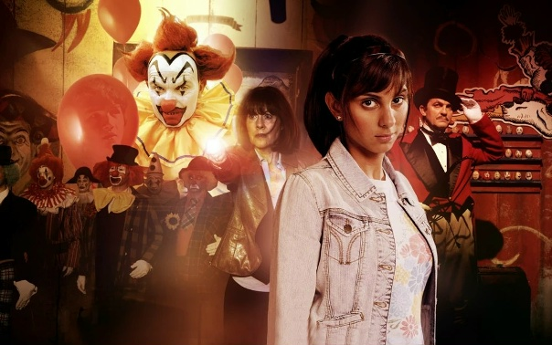

The Day of the Clown
Дата выхода: 6-13 октября 2008
Формат: 2 эпизода по 30 мин.
| Варианты озвучек: | * Разные: смотрите по инструкции |
|---|---|
| Скачивание и просмотр: |
Рани Чандра - новенькая на Баннерман-роад. Почему её преследует ужасающй клоун? Связано ли это с отмечаемой в последнее время пропажей детей? Когда исчезает Дэйв, друг Клайда, расследование команды Сары Джейн приводит их в странный музей-цирк и к старой легенде о дудочнике-крысолове.
